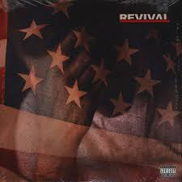
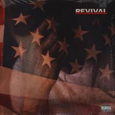
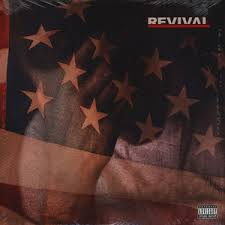

Discografía


 



Marshall Bruce Mathers III.conocido por su nombre artístico Eminem (estilizado como EMINƎM) y también por su álter ego Slim Shady, es un rapero, productor discográfico y actor estadounidense. Su nombre artístico proviene de la unión de las iniciales de Marshall Mathers: M&M («Em and Em», estilizándose como Eminem), mientras que el apodo de su álter ego (llevado al español como Sombra Misteriosa o el Flaco Sombrío) se hizo conocer por primera vez en 1997 con su primer EP titulado The Slim Shady EP.
